Claude Folders sorts your claude.ai chats into folders and saves each chat as a markdown file in a folder on your computer. The folders, the files and the settings are stored on your computer.
The setup has 3 steps: choosing the data folder, syncing the chats and organizing them into folders. Each step below has buttons that do it from here, and the chips above the sections jump to each one.
Step 1: Choose the Data Folder
Checking the data folder...
Click Go to Data folder below, then Choose folder in the Data folder section. In the popup, Select Data Folder opens the Data Folder Access window with the same Choose folder.
Pick an empty folder, such as Documents/Claude-Data, or the data folder you used before.
Click Select Folder, then Allow in Chrome's prompt. The Data Folder Access window minimizes itself and keeps the access while the browser is open.
The next time the browser starts, the Data Folder Access window opens once. Click Allow access, then Allow on every visit in Chrome's prompt. Chrome keeps that choice after restarts and reinstalls.
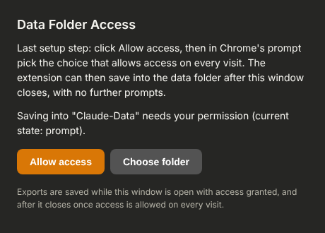
The Data Folder Access window at the next browser start.
Step 2: Sync the Chats
Reading the last sync...
Open claude.ai in a tab and sign in.
Click Sync now below, or Sync at the bottom of the popup.
Every chat, Cowork session and Claude Code session of the signed-in account is saved as a markdown file in the chats folder inside the data folder. In the first sync, every chat is read one at a time.
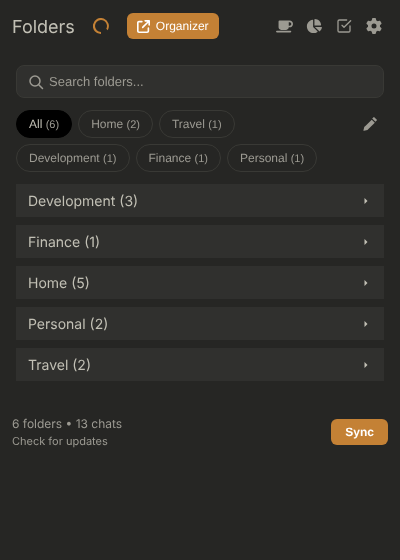
The popup. The half ring between the Folders title and the Organizer button is orange while new or changed chats are waiting.
The sync runs in the claude.ai tab, and that tab has to stay open until the sync finishes. Closing or reloading it ends the sync, and the next sync exports the chats not yet exported.
Pause and Stop take effect before the next chat. A paused sync shows Resume, and a stopped one shows Start.
Clicking × hides the bar. The sync keeps running, with its progress in the popup and the organizer.
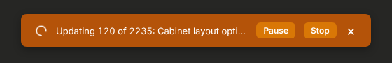
The progress bar on claude.ai during a sync.
The result lists the counts. A line such as 32 x not permitted opens the list of those chats as links to claude.ai.
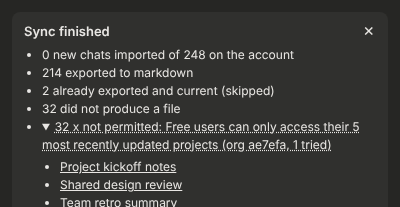
A sync result in the popup with a failure reason opened.
Step 3: Organize the Chats into Folders
Click the Claude Folders icon in the browser toolbar.
Click the square-check icon at the top of the popup to show the organize steps.
Click Organize in One Click. A claude.ai tab opens with your chat titles sent to Claude.
Wait for Claude's answer to finish. The tab shows a preview of the categories and folders.
Click Apply & Save. The chats are filed into the folders. Nothing is saved before this click.
The organizer's Organize button starts the same steps.
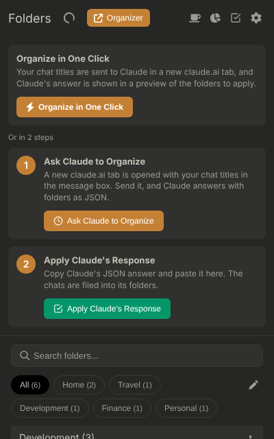
The popup with the organize steps shown.
Folders Panel on claude.ai
Clicking Folders in Claude's sidebar opens the Folders panel beside it, and the Folders row is highlighted while the panel is open.
Clicking a folder lists its chats in a second pane, 30 at a time.
Clicking Folders again, or anywhere outside the panel, closes it.
Each chat page has Export and Add to folder beside its title. Export Update appears when the chat has messages newer than its file.
Organizer
Top bar: Folders, Analytics, Sync, Organize, Export, Import, Settings and + New folder appear on every organizer page.
Search box: typing 2 or more characters lists the matching chats under it, by title and by the text of their exports.
All, Titles and Content pick the matches listed. Sort by orders them by best match, name, most recent message, oldest message or export date, with Asc or Desc beside it.
Account dropdown: picks the account whose folders and chats are shown.
List, Cards and Categories: List and Cards show every chat of the folders shown, with Sort by. Categories shows the folder cards by category. List is shown until another view is chosen.
A folder's page: the search box searches that folder's chats, and Sort by orders them. View offline opens a chat's export, also for another account's chats.
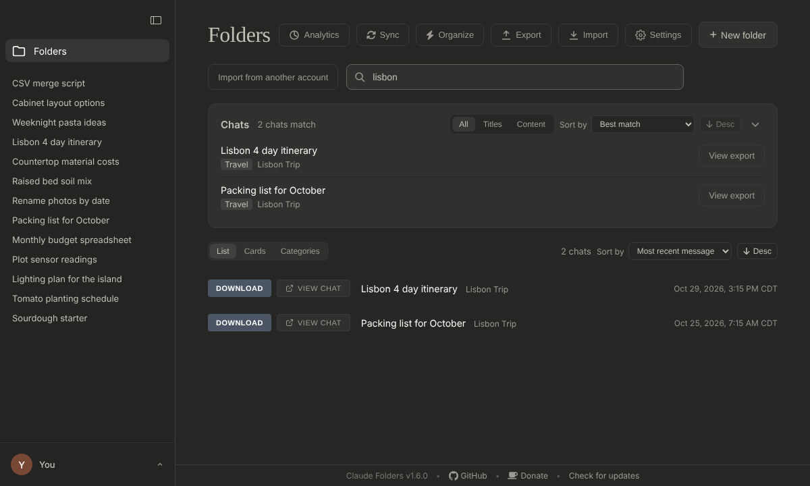
The organizer with "lisbon" in the search box.
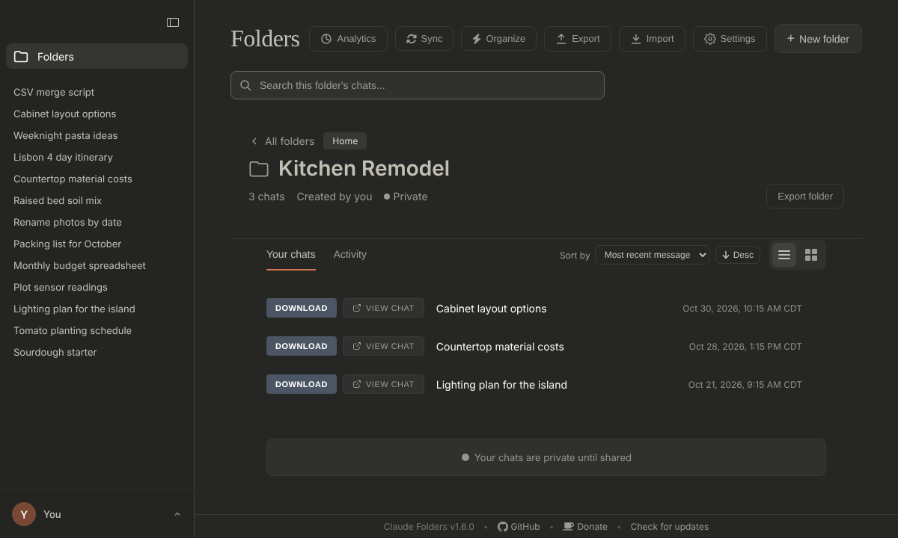
A folder in the organizer. Each chat shows the date and time of its last change.
Exported Chats
Each chat is saved in the chats folder as <first 8 characters of the chat id>_<title>.md. Each message has its date and time under its Human or Claude heading.
An export is written again by the next sync when the chat changed after the export, or when the export has no message times. The progress shows Updating for those and Exporting for new files.
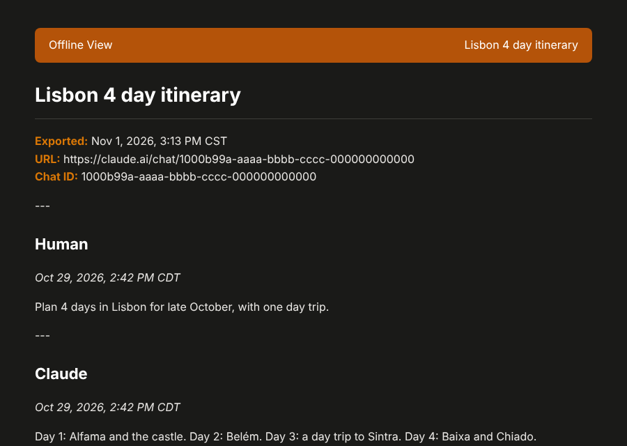
An export opened with View Offline in the organizer.
Automatic Sync
Reading the setting...
Click Go to Automatic sync below.
Sync automatically is checked and Every is 1 hour after install. Unchecking Sync automatically turns it off.
In Every, pick 15 minutes, 30 minutes, 1 hour, 2 hours or 4 hours.
Each sync runs in an open claude.ai tab with a writable data folder, and a turn with no claude.ai tab open is skipped. The section shows the time and the result of the last automatic sync.
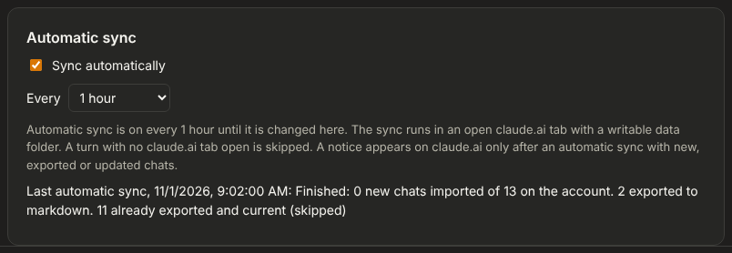
The Automatic sync section on the Settings tab.
Clicking the popup's sync icon with nothing waiting opens Everything is up to date. Force resync reads the whole conversation list and writes every export again, over the same files.
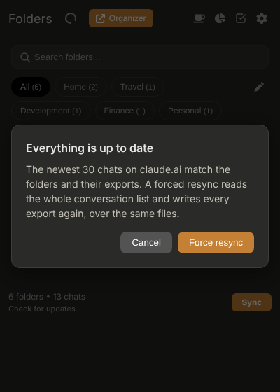
The forced resync dialog in the popup.
Moving Chats to Another Account
In the first account, choose the data folder and click Sync. Its chats are exported to the chats folder.
Sign in to claude.ai with the second account, and choose the same data folder.
Click Open import dialog below. Import from another account in the Folders panel or the organizer opens the same dialog.
In the dialog, pick the account to import from and the request sent with each chat.
Click Import followed by the count of chats. Pause and Stop appear on the progress bar.
Settings Files
Click Export settings below. The browser downloads claude-folders-settings.json.
On another computer, or after adding the extension again, click Import settings on the Import/Export tab and pick that file.
The file has the settings choices, the Folders panel views and the organizer's sidebar width. Folders and chats are stored in the data folder, and the file has none of them.
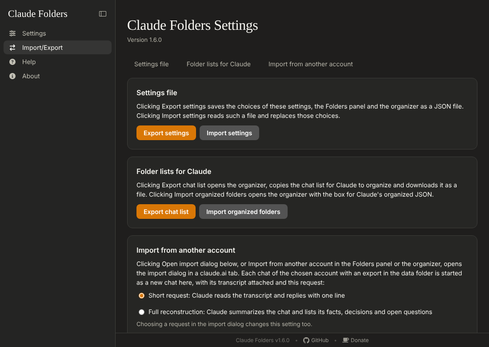
The Import/Export tab.
Claude Folders Helper
Claude Folders Helper is a small Windows program, installed apart from the extension. With it, the saved file names in the claude.ai notices and Show in folder open File Explorer at the exported file. Without it, saved file names are plain text.
Click GitHub releases below and download the helper from the latest release. The helper is a separate file from the extension's .zip.
Run the helper's setup on Windows and pick the same data folder as the extension.
Click Go to Claude Folders Helper, then Check again. The section shows the helper's version and the data folder it found.
Export says folder access is needed: click Open Data Folder Access below, then Allow access, then Allow on every visit when Chrome's prompt offers it.
Sync does not start after the extension was reloaded: clicking Sync opens a new claude.ai tab when the open one has none of the extension's scripts, and the sync runs in the new tab.
Folders are empty after adding the extension again: choose the same data folder on the Settings tab. Each account's folders are read back from its data.<account>.json file.
Some chats did not produce a file: open the reason line in the sync result to list those chats as links, and open each one on claude.ai.